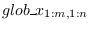

Next: psb_scatter Scatter Up: Communication routines Previous: psb_ovrl Overlap Contents
These subroutines collect the portions of global dense matrix distributed over all process into one single array stored on one process.
|

ALLOCATABLE attribute.